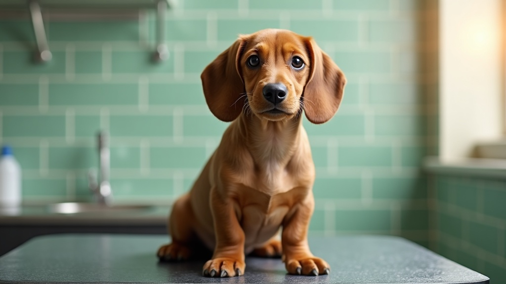
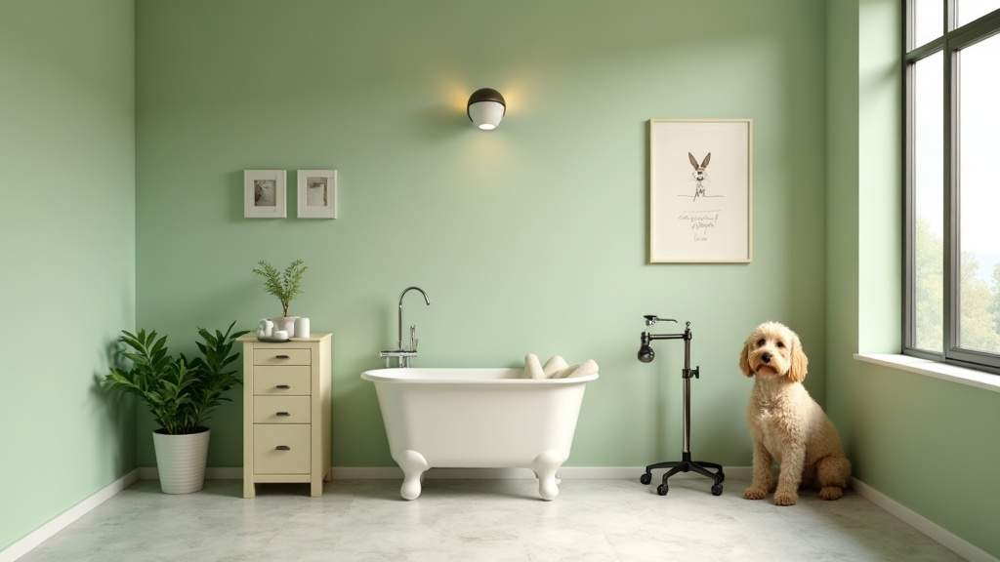
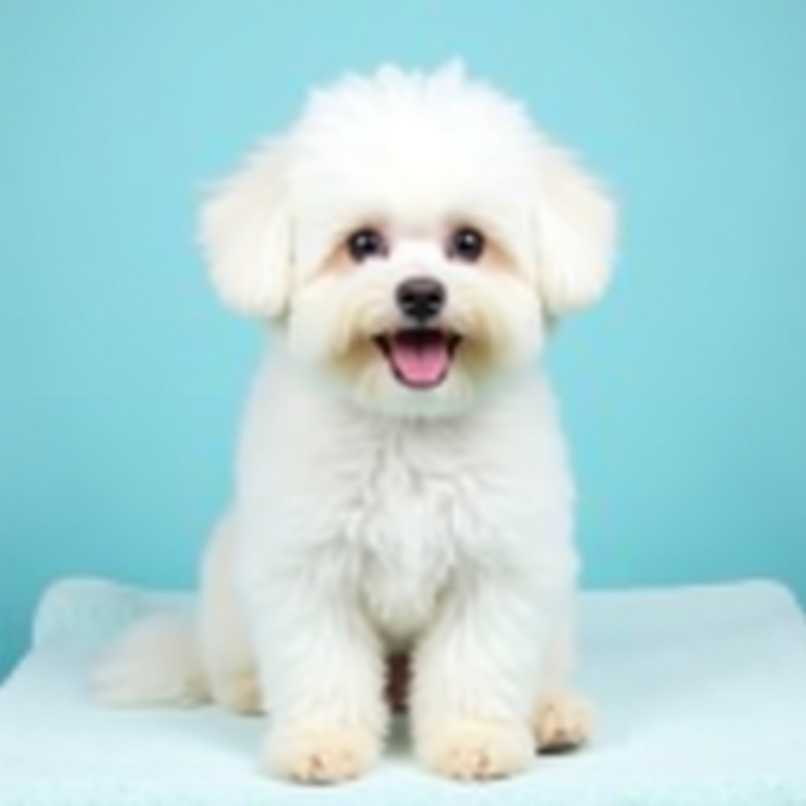
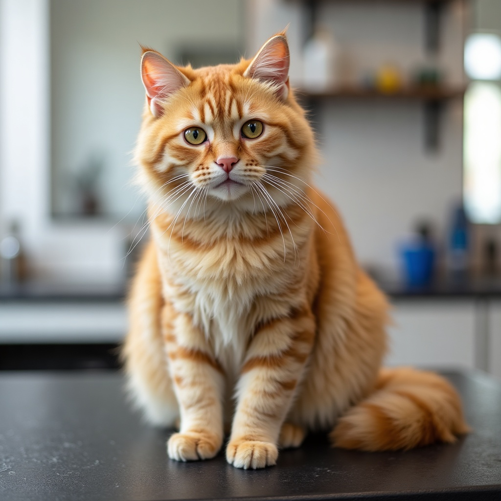
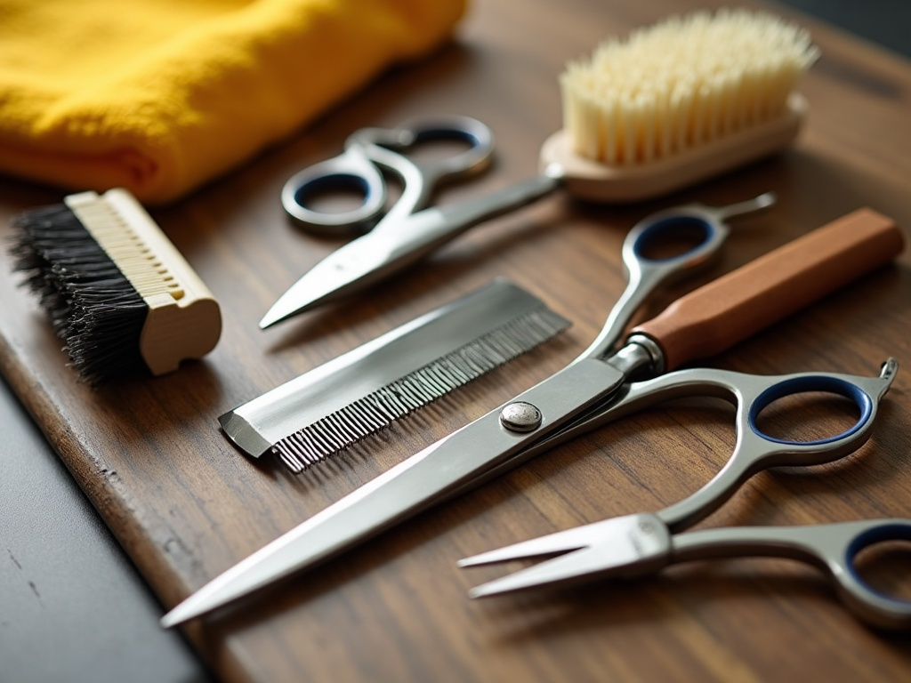

Cura, coccole
e tanto amore per i tuoi amici
Da anni un punto di riferimento a Bergamo per la toelettatura di cani e gatti: bagno, taglio, stripping e trattamenti curati nei minimi dettagli, in un ambiente pulito e accogliente.
Via Garibaldi 12/C, Bergamo — chiuso il lunedì
Toelettatura su misura, per ogni pelo
Ogni animale è diverso: adattiamo bagno, taglio e trattamenti alla razza, al tipo di pelo e alle esigenze del tuo amico a quattro zampe.
Bagno & asciugatura
Shampoo specifico per tipo di pelo, asciugatura curata a mano per un risultato morbido e profumato.
[prezzo da confermare]Tosatura & taglio a forbice
Taglio su misura in base a razza e standard estetico, oppure taglio pratico per la bella stagione.
[prezzo da confermare]Stripping
Tecnica manuale per le razze a pelo duro, per mantenere la struttura e il colore naturale del mantello.
[prezzo da confermare]Taglio unghie
Taglio e limatura delicata delle unghie, anche come servizio singolo veloce.
[prezzo da confermare]Pulizia orecchie & occhi
Igiene delle zone più delicate, per prevenire irritazioni e mantenere il benessere generale.
[prezzo da confermare]Trattamenti antiparassitari
Trattamenti mirati per la cura della pelle e la prevenzione di parassiti esterni.
[prezzo da confermare]Categorie di servizio tipiche di un salone di toelettatura professionale — nessun prezzo pubblicato online: da confermare sempre in negozio.

Chi siamo
Ottobassotto Snc (di Ronzoni Rossana & Andreis Marco) è da anni un punto di riferimento a Bergamo per la toelettatura di cani e gatti e per chi cerca i migliori prodotti per i propri animali. Curiamo ogni dettaglio — pulizia di orecchie, occhi e denti, taglio delle unghie, cura del pelo — con la stessa attenzione che dedicheremmo a un nostro animale.
In negozio trovi anche una selezione di alimenti, integratori e prodotti per cani e gatti.
Dati verificati online (Instagram, Facebook, directory di settore): nome della ragione sociale, indirizzo, orari e descrizione dei servizi. Il sito ufficiale non è più raggiungibile (dominio offline) — vedi README per il dettaglio delle fonti. Nessun nome o dato inventato.
Il sorriso dopo la toelettatura
Le immagini qui sotto sono ambientazioni generate con l'intelligenza artificiale per mostrare lo stile del salone — non sono foto reali dei clienti di Ottobassotto (vedi README).



Foto vere dei nostri amici
al prossimo aggiornamento
Prenota un appuntamento
Compila il modulo e ti ricontattiamo per confermare data e ora. Demo: qui sotto non viene inviato nessun dato reale (nessun backend collegato in questo PoC).
Richiesta inviata (demo)
In un sito reale, il negozio riceverebbe la richiesta e confermerebbe l'appuntamento per telefono.
Vieni a trovarci
Siamo a Bergamo, in Via Garibaldi 12/C. Rispondiamo volentieri al telefono per qualsiasi domanda.
| Lunedì | chiuso |
| Martedì–Venerdì | 9:30–18:30 |
| Sabato | 9:30–17:00 |